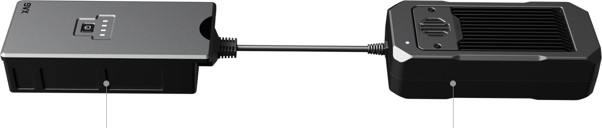
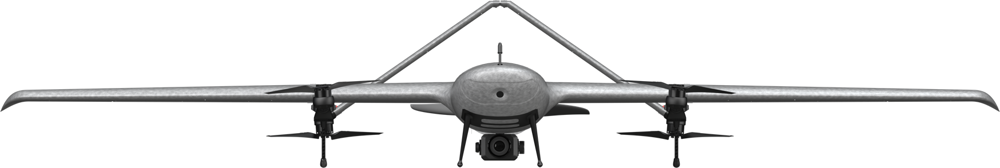
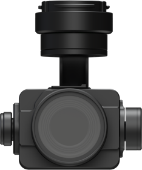
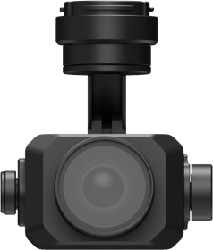
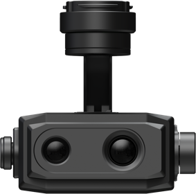
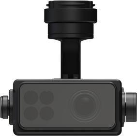

×
With the fixed-wing VTOL design, XAG M2000 Remote Sensing Drone is developed for high frequency and high
demand aerial survey tasks of multiple scenarios, which allows one person to map fields of 533 hectares in an hour¹.
Equipped with XAG SuperX 4 Pro Intelligent Control System, the XAG M2000 is capable of accessing quality
geographic data, which helps build up digital field maps stably and rapidly to facilitate production decisions.
Accurate & Autonomous Flight
RTK Centimetre-Level Positioning
Automated Flight Planning
Flexible Take-off and Landing
Fixed-Wing VTOL Design
Quick Release Body
Sophisticated & Stable Imaging
XCam 20MP Pro Gimbal Camera
XCam 26MP APS-C Gimbal Camera
XCam 20H Hybrid Gimbal Camera
XCam 20M Multispectral Gimbal Camera
Safe & Efficient Images Stitching
Cluster Cloud Computing with Encryption
Post Processed Kinematic
VTOL For Flexible and Efficient Flight
The quick assembly XAG M2000 can be immediately deployed for
operations. The combination structure of multiple rotors and fixed
wings allows flexible take-off and landing. 3 kg EPP fuselage plus the
high-energy-density battery provide up to 90 minutes flight time and a
range of 86 kilometers in a single flight.
Maximum Battery Life²
Maximum Flight Distance³
Quick Assembly⁴
Overall Weight⁵
Outsmart, Outperform, Outsprint
The SuperX 4 Pro Intelligent Control System endows XAG M2000 the
power of fully autonomous flight at cm-level accuracy while capturing
high-resolution images. With a built-in emergency response
mechanism, it monitors the drone’s flight status in real time, and
supports quick swapping between multi-rotor and fixed-wing flight
modes, ensuring flight safety and survey efficiency.

Centimetre-Level Positioning
Dual-Antenna RTK + Cloud Base Stations⁶
Safe Flight
3 x IMU + Emergency Response Mechanism⁷
Stable Data Connection
4G Network Transmission
Seamless Trajectories
Break-Point Continuous Flight
Longer Battery Life, Higher Efficiency

B6180 Smart Battery
· 8000mAh Large Capacity
· 90 mins Battery Life⁸
· Smart Battery Management System
Fast Charger
· 300W Fast Charging
Cameras To Multi-application, Fast Switch
Featured with 3-axis mechanical stabilized gimbal and mechanical
shutter max out at 1/2000 sec., all cameras can take photos at high-
speed without rolling shutter effect. Anti-distortion and autofocus lens
contributes to high-resolution imaging.


XCam 20MP Pro Gimbal Camera¹
- 20 MP 1" CMOS Sensor
- Robust ISP
- Ground Control Point-Free
Used for Orthophoto & Oblique Photography

XCam 26MP APS-C Gimbal Camera²
- 26 MP APS-C CMOS Sensor
- 0.4s Shooting Interval
- Photos in Five Directions
Used for Orthophoto & Oblique Photography

XCam 20H Hybrid Gimbal Camera³
- Infrared & 20 MP 1" CMOS Sensor
- Temperature Measurement at ±3℃ accuracy
Used for HD Map & Thermal Map

XCam 20M Multispectral Gimbal Camera⁴
- 20 MP 1" CMOS Sensor & 4-Channel Multispectral Sensor
- Automatic Sunlight Compensation
Real-time NDVI Video
Easy Flight Planning, Easy Mapping
XAG SRC1 Smart Remote Controller, with its built-in touchscreen and
XPilot APP, allows freely switch between autonomous flight and manual
control. Multiple flight planning modes are available to meet your needs
of various application scenarios. The 4G and Wi-Fi dual communication
system support stable and long-range internet connection.
XPilot APP¹²
Designed for aerial mapping, easy to use
4G + Wi-Fi Dual Link
TReal-time data transmission, stabler control
5.5" 800 Lumens HD Touchscreen
Clear visual under strong light
4.5h Duration¹³
Suitable for longer task
Field Mapping
HD map
Oblique Photography
3D map
POI Cruising
Target areas scouting
Strip Mapping
River & roadway inspection
Diverse Application Scenarios, Infinite Possibilities
Agricultural Production
The XAG m2000 can create digital field map to assist production decision through efficient scouting on large-scale farmland.
Rural Governance
It bring quick insights into the use of arable land and growth of crops to provide information support for rural governance and efforts to build a beautiful countryside.
Agricultural Resource Survey
Assist in prospecting large-scale agricultural resource without arduous journey, which is time-saving, efficient and safe.